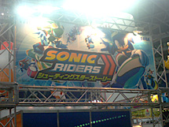
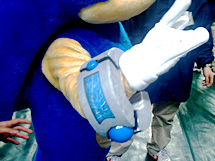

ワールドホビーフェアイベントレポート
会場：京セラドーム大阪
日時：2008年1月13日（日）
2008年1月13日（日）、京セラドーム大阪にて「次世代ワールドホビーフェア’08 Winter」が開催。
セガからは『ソニックライダーズ シューティングスターストーリー』の他に、『映画ドラえもん のび太と緑の巨人伝』のニンテンドーＤＳ版、『ドラえもんWii ひみつ道具王決定戦！』、『古代王者 恐竜キング』、『おしりかじり虫のリズムレッスンDS カワイ音楽教室監修』『甲虫王者ムシキング』『オシャレ魔女 ラブ and ベリー』『マリン☆マリン～ミナミハコフグと珊瑚礁の仲間達～』『ビーナランド ドラえもん（セガトイズ）』など、人気のタイトル多数が出展されました。
-
会場内は大盛況！
-
朝から大勢の人が詰掛けて、ドーム内の温度は急上昇！セガブースにもたくさんの子供たちが遊びにきてくれました。
- 
一般者向けイベントとしては初のプレイアブル出展となる『ソニックライダーズ シューティングスターストーリー』
-
今回は「メガロステーション」と「アクアティックキャピタル」の2ステージを紹介。みんな2P対戦で大いに盛り上がっていました。
-
友達、親子、兄弟で対決！プレイしてくれた人達は、最初はWiiリモコンの操作にコワゴワ・・・。でも2周目、3周目と徐々になれていき、白熱のスピードバトルを繰り広げていたぞ！
-
待ち時間は30分から60分ぐらい。待っている間は『ソニックラッシュアドベンチャー』の体験版をDSにダウンロードして遊んでね。
-
プレイしてくれた人には「ソニック特製デジバンド」をプレゼント。また配布したチラシに書かれているクイズに答えると抽選で豪華プレゼントがもらえるぞ！会場でチラシをゲットして、プレゼントに応募してね。
-
ソニックも応援に駆けつけてくれた！登場するやいなや、通行人もみんなこぞって記念撮影。大阪でも大人気なソニック。
- 
おや？その右手についているのはゲームに登場する例の隕石では・・・！？
-
大阪会場は大盛況で幕を閉じました。遊びに来てくれたみなさん、どうもありがとうございました。
-
「次世代ワールドホビーフェア‘08Winter」はこの後東京（幕張）、福岡、名古屋と全国各地で開催されるぞ。
-
会場でゲームを体験して、その続きを製品でお楽しみください。